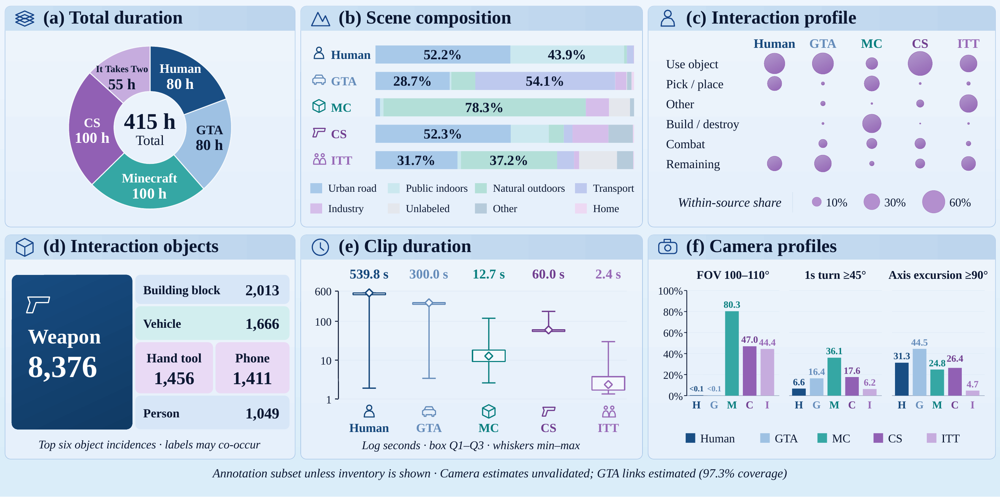

CoWorld:Expanding World Modeling to Diverse and
Realistic Multi-Agent Environments
Abstract
One participant's camera can miss a handover while the other records the transfer. To predict both views, a model must track who holds the object and what each person can see. We introduce CoWorld, a dataset and training method for joint video prediction across everyday human interactions and four multiplayer games. In the human recordings, each of the two participants wears a camera. These first-person videos and instrumented GTA sessions contribute 80 view-hours each. Minecraft, Counter-Strike, and It Takes Two add 255, for a total of 415 view-hours of semantically annotated video. GTA links each player's view to recorded controls and shared game states. Our annotations distinguish recorded controls from inferred actions and identify who acted, when, and which view shows the action. We pack the two initial views side by side and adapt the pretrained H3 video generator with low-rank updates on 1,980 GTA samples. A single prompt assigns actions and camera motions to each participant on a shared timeline. On 250 test pairs, 50 per source, CoWorld has the highest framewise and clip-level cross-view similarity among four systems on all five sources. It ranks first in DOVER video quality on four sources and has the lowest source-averaged error in motion magnitude.
Dataset analysis

Generations
paired scenes · Latest action demos ↗